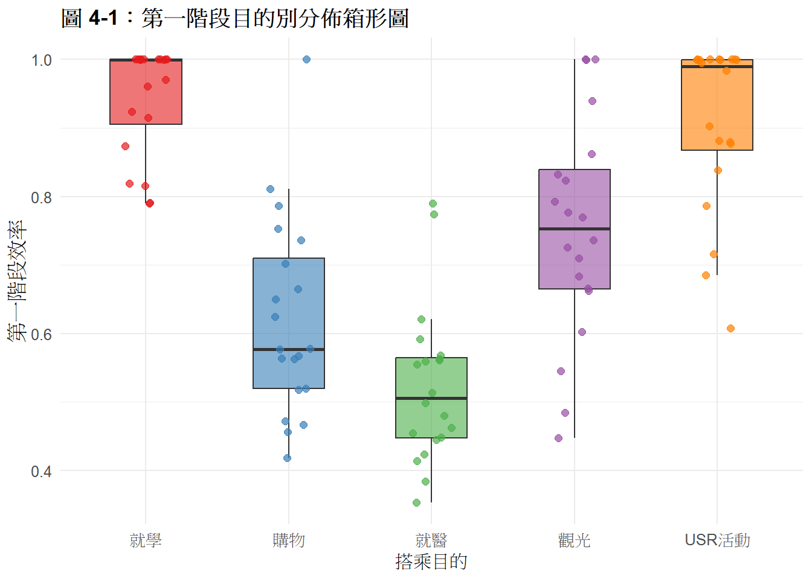
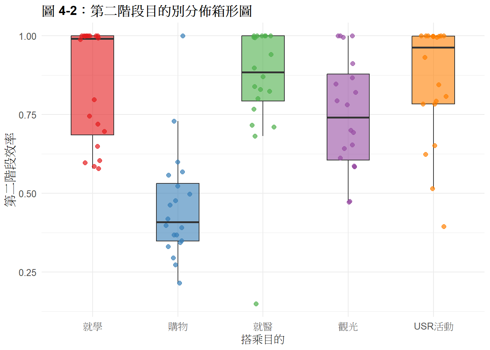
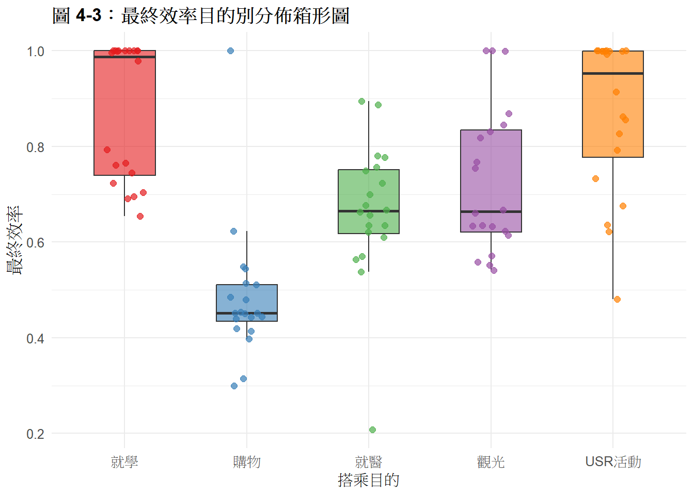

於本次所採用的原始數據細節，以及各項投入與產出在實務上之具體定義，詳見 第ch5：資料生成邏輯與原始數據。 資料庫涵蓋了車輛派遣時間、行駛里程、志工與學生投入工時、以及每趟車次之補貼油資。
為落實社會轉變理論之架構，並確保指標選取運算之邏輯一致性，建立如表 4-1 所示之指標對照體系。該表將偏鄉共乘服務之營運與社會效益，拆解為三個階段之投入與產出變數：
| Phase | Role | Symbol | Name | Logic | ToC |
|---|---|---|---|---|---|
| 第一階段 (營運) | 原始投入 | \(x_{1}^1\) | 志工時間 | 實際總投入工時 | 利害關係人投入 |
| \(x_{2}^1\) | 補貼與油資 | 里程*5+補貼額 | USR 經費配置 | ||
| \(x_{3}^1\) | 學生時間 | 實際調度工時 | 人力成本 | ||
| 中間產出 | 服務產出 | \(z_{1}^{12}\) | 準時程度 | 1/(1 + |預約差值|) | 運輸品質 |
| \(z_{2}^{12}\) | 有效人公里 | 距離 x 搭乘人數 | 實質服務供給 | ||
| \(z_{3}^{12}\) | 服務覆蓋度 | 1-大眾運輸可達里程/總里程 | 可及範圍 | ||
| 第二階段 (社會) | 額外投入 | \(x_{1}^2\) | 學生轉換時間 | 實際投入工時 | 增加社會資本 |
| 最終產出 | \(y_{1}^2\) | 時間費用節散 | 時間*196+實際節省交通費 | 降低交通負擔 | |
| \(y_{2}^{2}\) | 減碳量價值 | 碳排差額 x 碳價 | 環境效益 | ||
| \(y_{3}^2\) | 參與收穫價值 | 問卷計算 | 社交連結 |
針對偏鄉共乘服務的各階段效率進行統計，結果如表 4-2 所示。整體樣本之營運效率平均值為0.749，標準差為0.205；社福效率平均值為 0.753，標準差為0.236，整體效率平均為0.725
library(dplyr)
library(knitr)
library(kableExtra)
library(readxl)
QQ <- read_excel("C:/Users/x2991/Downloads/QQ.xlsx")
# 1. 計算各組數據
group_stats <- QQ %>%
group_by(purpose) %>%
summarise(
樣本數 = n(),
營運平均 = round(mean(S1E, na.rm = TRUE), 3),
營運SD = round(sd(S1E, na.rm = TRUE), 3),
社福平均 = round(mean(S2E, na.rm = TRUE), 3),
社福SD = round(sd(S2E, na.rm = TRUE), 3),
綜合平均 = round(mean(FE, na.rm = TRUE), 3)
)
# 2. 計算全體樣本數據 (Overall)
overall_stats <- QQ %>%
summarise(
purpose = "全體樣本",
樣本數 = n(),
營運平均 = round(mean(S1E, na.rm = TRUE), 3),
營運SD = round(sd(S1E, na.rm = TRUE), 3),
社福平均 = round(mean(S2E, na.rm = TRUE), 3),
社福SD = round(sd(S2E, na.rm = TRUE), 3),
綜合平均 = round(mean(FE, na.rm = TRUE), 3)
)
# 3. 合併表格
final_table <- bind_rows(group_stats, overall_stats)
# 4. 輸出最終版表格
kable(final_table,
"html",
caption = "表 4-2：各目的別與全體樣本投入與產出效率之描述性統計",
col.names = c("搭乘目的", "樣本數", "營運(平均)", "營運(SD)", "社福(平均)", "社福(SD)", "綜合(平均)")) %>%
kable_styling(bootstrap_options = c("striped", "hover", "condensed"), full_width = FALSE) %>%
# 最後一行（總計）加粗，看起來更醒目
row_spec(nrow(final_table), bold = TRUE, background = "#f2f2f2")| 搭乘目的 | 樣本數 | 營運(平均) | 營運(SD) | 社福(平均) | 社福(SD) | 綜合(平均) |
|---|---|---|---|---|---|---|
| USR活動 | 20 | 0.908 | 0.123 | 0.856 | 0.185 | 0.870 |
| 就學 | 20 | 0.943 | 0.080 | 0.848 | 0.178 | 0.875 |
| 就醫 | 20 | 0.523 | 0.114 | 0.851 | 0.199 | 0.666 |
| 觀光 | 20 | 0.753 | 0.162 | 0.751 | 0.175 | 0.729 |
| 購物 | 20 | 0.621 | 0.144 | 0.459 | 0.178 | 0.484 |
| 全體樣本 | 100 | 0.749 | 0.205 | 0.753 | 0.236 | 0.725 |
圖 4-1 至 4-3 之分析：偏鄉共乘的效率與轉化機制 「本研究透過三階段箱形圖分析，探討偏鄉共乘系統在不同搭乘目的下，從『營運投入』到『社會價值產出』之轉化過程：
營運端的資源穩定性（圖 4-1）：『就學』與『USR活動』在第一階段展現出極高的營運效率中位數（趨近 1.0），此類具有固定時程、預期乘客數穩定之目的別，較能發揮運輸資源調度。
社會價值傳換的效率（圖 4-2）：『就醫』需求在營運階段雖效率受限，但在第二階段社會效益轉換中，展現出較高的效率。此現象證實在面對社會價值轉換導向需求時，具有將低營運效率轉化為高社會價值（如：提升長者就醫可及性）的補償機制。
最終效率的結構（圖 4-3）：綜合兩階段之最終效率顯示，各目的別之績效分佈呈現顯著的結構性差異。其中，就學與USR活動持續位居效率頂端；就醫透過社會價值轉換的效率，在最終績效上向上成長，由原本的低效群體提升至中段水準；而『購物』與『觀光』類別，在營運與社福兩階段均沒有有效轉化，最終績效呈現落後。



為探討不同搭乘目的（就學、購物、就醫、觀光、USR 活動）對於偏鄉共乘服務效率之影響，本研究依據統計分析之嚴謹程序，執行以下檢定步驟：
常態性檢定：首先以 Shapiro-Wilk Test 檢定各階段效率指標之分布情形。檢定結果顯示，各項指標之 \(p\)-value 均小於 0.05，故判定數據不符合常態分配假設，不適合ANOVA。
##
## Shapiro-Wilk normality test
##
## data: QQ$S1E
## W = 0.90489, p-value = 2.42e-06##
## Kruskal-Wallis rank sum test
##
## data: S1E by purpose
## Kruskal-Wallis chi-squared = 60.384, df = 4, p-value = 2.408e-12##
## Kruskal-Wallis rank sum test
##
## data: S2E by purpose
## Kruskal-Wallis chi-squared = 36.069, df = 4, p-value = 2.801e-07組間差異檢定：基於數據非常態特性，本研究採用無母數分析中之 Kruskal-Wallis Test，以檢定五種搭乘目的組別間之效率中位數是否存在顯著差異。
事後多重比較：若 Kruskal-Wallis Test 之 \(p\)-value 達顯著水準，則進一步採用 Pairwise Wilcoxon Test（並結合 BH 方法進行 \(p\)-value 校正），以確定兩兩目的別間之效率差異來源。」
檢定 A:第一階段
H0:五種搭乘目的的第一階段效率中位數皆無顯著差異。
H1:五種搭乘目的之第一階段效率中位數至少有兩組具顯著差異。
檢定 B:第二階段
H0:五種搭乘目的之第二階段效率中位數皆無顯著差異。
H1:五種搭乘目的之第二階段效率中位數至少有兩組具顯著差異。
檢定 C:最終效率
H0:五種搭乘目的之最終效率中位數皆無顯著差異。
H1:五種搭乘目的之最終效率中位數至少有兩組具顯著差異。
QQ$grp_chinese <- factor(QQ$purpose, levels = c("就學", "購物", "就醫", "觀光", "USR活動"))
# 檢定A第一階段效率
cat("檢定 A:第一階段效率整體與事後兩兩檢定\n")檢定 A:第一階段效率整體與事後兩兩檢定cat("整體檢定(Kruskal-Wallis Test)：\n")整體檢定(Kruskal-Wallis Test)：kw_S1E <- kruskal.test(S1E ~ grp_chinese, data = QQ)
print(kw_S1E)
Kruskal-Wallis rank sum test
data: S1E by grp_chinese
Kruskal-Wallis chi-squared = 60.384, df = 4, p-value = 2.408e-12# 2. 兩兩比較表格 換成 Pairwise Wilcoxon 矩陣
cat("第一階段效率兩兩比較(Pairwise Wilcoxon)\n")第一階段效率兩兩比較(Pairwise Wilcoxon)pw_S1E <- pairwise.wilcox.test(QQ$S1E, QQ$grp_chinese, p.adjust.method = "BH")
print(pw_S1E)
Pairwise comparisons using Wilcoxon rank sum exact test
data: QQ$S1E and QQ$grp_chinese
就學 購物 就醫 觀光
購物 5.7e-08 - - -
就醫 1.5e-10 0.01466 - -
觀光 0.00015 0.01288 4.9e-05 -
USR活動 0.26787 4.1e-06 4.9e-09 0.00329
P value adjustment method: BH # 檢定B第二階段效率
cat("檢定 B:第二階段效率整體與事後兩兩檢定\n")檢定 B:第二階段效率整體與事後兩兩檢定cat("整體檢定(Kruskal-Wallis Test)\n")整體檢定(Kruskal-Wallis Test)kw_S2E <- kruskal.test(S2E ~ grp_chinese, data = QQ)
print(kw_S2E)
Kruskal-Wallis rank sum test
data: S2E by grp_chinese
Kruskal-Wallis chi-squared = 36.069, df = 4, p-value = 2.801e-07cat("第二階段效率兩兩比較(Pairwise Wilcoxon)\n")第二階段效率兩兩比較(Pairwise Wilcoxon)pw_S2E <- pairwise.wilcox.test(QQ$S2E, QQ$grp_chinese, p.adjust.method = "BH")
print(pw_S2E)
Pairwise comparisons using Wilcoxon rank sum exact test
data: QQ$S2E and QQ$grp_chinese
就學 購物 就醫 觀光
購物 1.6e-06 - - -
就醫 1.000 7.8e-06 - -
觀光 0.141 1.2e-05 0.068 -
USR活動 1.000 4.6e-06 1.000 0.127
P value adjustment method: BH cat("檢定C最終效率整體與事後兩兩檢定\n")檢定C最終效率整體與事後兩兩檢定# 1. 整體檢定 (拒絕 H0)
cat("整體檢定( Kruskal-Wallis Test) \n")整體檢定( Kruskal-Wallis Test) kw_FE <- kruskal.test(FE ~ grp_chinese, data = QQ)
print(kw_FE)
Kruskal-Wallis rank sum test
data: FE by grp_chinese
Kruskal-Wallis chi-squared = 50.057, df = 4, p-value = 3.513e-10# 2. 事後兩兩比較表格
cat("最終效率兩兩比較(Pairwise Wilcoxon)\n")最終效率兩兩比較(Pairwise Wilcoxon)pw_FE <- pairwise.wilcox.test(QQ$FE, QQ$grp_chinese, p.adjust.method = "BH")
print(pw_FE)
Pairwise comparisons using Wilcoxon rank sum exact test
data: QQ$FE and QQ$grp_chinese
就學 購物 就醫 觀光
購物 1.3e-07 - - -
就醫 9.7e-05 2.0e-05 - -
觀光 0.00509 5.6e-07 0.61052 -
USR活動 0.61052 5.6e-07 0.00033 0.01356
P value adjustment method: BH 第一階段為營運效率，整體 Kruskal-Wallis 檢定呈現高度顯著(\(\chi^2\)=60.384,p < 0.001)，拒絕五組中位數無顯著差異的虛無假設
兩兩比較中發現USR活動-就學的p-value為0.268（無顯著差異）
數據表示，就學與USR活動兩組在第一階段營運效率的分布上具有一定程度的同質性
進一步交叉比對發現，就學與USR活動兩組，在面對其他目的別（購物、就醫、觀光）時，其兩兩比較的p-value均達到極度顯著之統計水準p<0.01。
因此在顯著水準 \(\alpha\) = 0.05下，就學與USR活動在第一階段效率表現明顯優於其他目的。
第二階段為社會轉換效率，整體 Kruskal-Wallis 檢定結果呈現高度顯著（\(\chi^2 = 36.069\)，\(p < 0.001\)），拒絕五組效率中位數無顯著差異之虛無假設。
比較中發現USR活動、就學、就醫任兩個的p-value皆達到完全不顯著(p=1)
在顯著水準 \(\alpha\) = 0.001 至 0.05 的範圍內都無法拒絕此三組兩兩互比之虛無假設
因此判定 就醫、就學與USR活動三組在第二階段社會轉換效率的分布上，具備極高的統計同質性，在社會轉換效率上高度相同
而購物在跟其他目的比較時都呈現高度顯著(p<0.001)，因此判定購物在社會轉換效率明顯低於其他目的。
最終效率整體 Kruskal-Wallis 檢定結果呈現高度顯著（\(\chi^2\) = 50.057，p < 0.001），拒絕五組最終效率中位數無顯著差異之虛無假設。
兩兩比較中，USR活動 - 就學 之調整後 p-value} 為 0.611（大於 0.05，未達顯著差異）。這代表在顯著水準 \(\alpha\) = 0.05下，就學與 USR 活動兩組在最終效率的分佈上仍然具備高度同質性
就醫在第一階段雖然效率較差，但在最終效率中，跟觀光組之比較呈現完全不顯著（p = 0.611），代表兩者在最終效率上具備高度統計同質性。
就醫與購物也出現高度顯著（就醫 - 購物，p < 0.001），在最終效率層面分類進中間
購物在最終效率上，則與其他目的出現高度顯著差異，因此判定，購物在最終效率上明顯地落後於其他所有目的
| 搭乘目的 | 第一階段 | 第二階段 | 第三階段：最終綜合效率 |
|---|---|---|---|
| 就學 | 優 | 優 | 優 |
| USR活動 | 優 | 優 | 優 |
| 觀光 | 中 | 中 | 中 |
| 就醫 | 差 | 優 | 中 |
| 購物 | 中 | 差 | 差 |
為探討各投入資源與環境變數對於效率值之邊際影響力，本研究進一步構建 Tobit 迴歸模型進行實證分析。
模型建構基於以下理由：
資料特性之限制：由於被解釋變數（營運效率、社福轉換效率及最終效率）均為 NDEA 模型計算所得之技術效率值，其數值範圍嚴格限制於 \([0, 1]\) 區間內。若採用一般最小平方法（OLS），我怕產生估計值超過合理界限或具備偏誤之情形，故採行 Tobit 模型以處理依變數之估計問題。
控制變數之引入：為釐清控制變數（搭乘目的）之影響力，模型自變數中引入五種搭乘目的作為虛擬變數），以『就學』為基準組（Reference Group），藉此對比其他目的別在控制了各項資源投入（如：志工工時、補貼油資）後的效率差異。
參數估計方法：本模型採最大概似法（Maximum Likelihood Estimation, MLE）進行參數估計，以確保在受限模型下估計係數之不偏性與有效性。
library(VGAM)
QQ$grp <- factor(QQ$grp)
# 模型 A：第一階段營運效率 Tobit 迴歸
cat("第一階段營運效率 迴歸結果\n")第一階段營運效率 迴歸結果# 自變數對齊 QQ 欄位：VT, ST, OIL, STS 加上目的別開關 grp
tobit_S1E <- vglm(S1E ~ VT + ST + OIL + grp,
tobit(Lower = 0, Upper = 1), data = QQ)
print(summary(tobit_S1E))
Call:
vglm(formula = S1E ~ VT + ST + OIL + grp, family = tobit(Lower = 0,
Upper = 1), data = QQ)
Coefficients:
Estimate Std. Error z value Pr(>|z|)
(Intercept):1 1.000e+00 3.700e-06 270278.907 <2e-16 ***
(Intercept):2 -1.117e+01 7.435e-02 -150.236 <2e-16 ***
VT 3.334e-03 4.300e-07 7752.750 <2e-16 ***
ST 3.333e-03 2.154e-07 15478.612 <2e-16 ***
OIL 3.333e-03 4.325e-07 7705.913 <2e-16 ***
grpShop -2.514e-06 6.040e-06 -0.416 0.677
grpClinic 1.063e-05 6.814e-06 1.560 0.119
grpTour -4.082e-06 5.265e-06 -0.775 0.438
grpUSR -3.593e-06 4.848e-06 -0.741 0.459
---
Signif. codes: 0 '***' 0.001 '**' 0.01 '*' 0.05 '.' 0.1 ' ' 1
Names of linear predictors: mu, loglink(sd)
Log-likelihood: 811.8385 on 191 degrees of freedom
Number of Fisher scoring iterations: 7 # 模型 B：第二階段社會轉換效率Tobit 迴歸
cat("第二階段社會轉換效率 迴歸結果\n")第二階段社會轉換效率 迴歸結果tobit_S2E <- vglm(S2E ~ STS + Money + SH + CO + grp,
tobit(Lower = 0, Upper = 1), data = QQ)
print(summary(tobit_S2E))
Call:
vglm(formula = S2E ~ STS + Money + SH + CO + grp, family = tobit(Lower = 0,
Upper = 1), data = QQ)
Coefficients:
Estimate Std. Error z value Pr(>|z|)
(Intercept):1 9.867e-01 2.490e-02 39.632 < 2e-16 ***
(Intercept):2 -2.315e+00 7.872e-02 -29.410 < 2e-16 ***
STS 1.472e-02 1.597e-03 9.217 < 2e-16 ***
Money 1.167e-03 8.873e-03 0.131 0.8954
SH -1.039e-03 1.323e-04 -7.848 4.21e-15 ***
CO -6.195e-04 7.557e-05 -8.198 2.44e-16 ***
grpShop -3.170e-02 5.413e-02 -0.586 0.5581
grpClinic 3.860e-02 3.342e-02 1.155 0.2480
grpTour -7.243e-02 3.218e-02 -2.251 0.0244 *
grpUSR -4.209e-02 3.321e-02 -1.268 0.2050
---
Signif. codes: 0 '***' 0.001 '**' 0.01 '*' 0.05 '.' 0.1 ' ' 1
Names of linear predictors: mu, loglink(sd)
Log-likelihood: 50.9416 on 190 degrees of freedom
Number of Fisher scoring iterations: 8 # 模型 C：最終效率 Tobit 迴歸
cat("最終效率 迴歸結果\n")最終效率 迴歸結果tobit_FE <- vglm(FE ~ VT + ST + OIL + STS + Money + SH + CO + grp,
tobit(Lower = 0, Upper = 1), data = QQ)
print(summary(tobit_FE))
Call:
vglm(formula = FE ~ VT + ST + OIL + STS + Money + SH + CO + grp,
family = tobit(Lower = 0, Upper = 1), data = QQ)
Coefficients:
Estimate Std. Error z value Pr(>|z|)
(Intercept):1 9.886e-01 1.203e-02 82.206 < 2e-16 ***
(Intercept):2 -3.052e+00 7.486e-02 -40.773 < 2e-16 ***
VT 4.330e-03 1.445e-03 2.998 0.002720 **
ST 2.500e-03 7.548e-04 3.312 0.000926 ***
OIL 9.009e-05 1.451e-03 0.062 0.950482
STS 6.918e-03 8.130e-04 8.510 < 2e-16 ***
Money 6.734e-03 4.478e-03 1.504 0.132597
SH -6.156e-04 6.621e-05 -9.297 < 2e-16 ***
CO -4.488e-04 3.482e-05 -12.890 < 2e-16 ***
grpShop 2.865e-02 2.778e-02 1.032 0.302273
grpClinic 7.811e-02 2.356e-02 3.316 0.000914 ***
grpTour -3.273e-03 1.733e-02 -0.189 0.850167
grpUSR -5.463e-03 1.609e-02 -0.340 0.734149
---
Signif. codes: 0 '***' 0.001 '**' 0.01 '*' 0.05 '.' 0.1 ' ' 1
Names of linear predictors: mu, loglink(sd)
Log-likelihood: 127.0156 on 187 degrees of freedom
Number of Fisher scoring iterations: 8 應變數:第一階段純營運效率
自變數:志工時間（VT）、學生時間（ST）與油資補貼（OIL）
數據顯示，自變數對第一階段純營運效率均呈現顯著影響。
數值表現上，VT、ST 與 OIL 三者之邊際估計係數呈現高度相似
推測這三項實體投入成本將呈現固定比例之集體浪費，因此迴歸模型分攤了同等的影響。
應變數:第二階段社會轉換效率
自變數:學生轉換社會價值投入時間(STS) 、總節省價值（Money）、活動收穫增加率（SH）與減碳量增加率（CO）
數據顯示，除了總節省價值，另外三個自變數對第二階段社會轉換效率均呈現顯著影響。
關於總節省價值之不顯著： 數據顯示節省價值對效率無統計顯著性，這反映出偏鄉共乘的時間與交通費節省，對於使用者的社會價值轉換並無明顯的邊際影響，這證實了社會轉換效率的關鍵在於活動體感(活動收穫)與環境效益(減碳量)，而非單純的時間費用節省。
觀光目的的結構劣勢：
在控制了自變數後，原本不顯著的觀光目的別虛擬變數（grpTour）轉化為顯著的負面影響。這項數據指出，即使在資源與產出完全相同的基準下，觀光車次的屬性，相較於就學等車次，在福利轉換上存在結構劣勢。
應變數：最終效率
自變數：志工時間（VT）、學生時間（ST）、油資補貼（OIL）、學生轉換社會價值投入時間（STS）、總節省價值（Money）、活動收穫增加率（SH）與減碳量增加率（CO）
關於油資補貼與總節省價值之不顯著： 數據顯示，油資補貼（p = 0.950）與總節省價值（p = 0.132）皆未達統計顯著性。這反映出當共乘使用最終效率檢視時，這類型費用層面（油資消耗與費用節省），已不再是決定最終綜合效率高低的關鍵因素。
就醫目的的結構優勢:
控制了所有自變數後，原本前兩階段不顯著的就醫目的別（grpClinic）突然變得顯著（p < 0.001），而購物、觀光與 USR 則與基準組就學組在統計上無顯著差異。
這指出，在全面排除並控制了所有檯面上可量化的浪費與產出缺口後，就醫車次因為它獨特的結構，使其在最終效率上，比就學車次還要高出 0.078 分。根據數據推測就醫或許有隱形社會價值。
需求優先調度給就學/就醫：針對就學與就醫行程，建立「優先排程機制」。利用模型中發現的結構優勢，與醫院或學校建立預約連動。
彈性需求集中化（購物/觀光）：數據顯示這兩類效率落後，應實施「時段限定服務」或「強制共乘」，利用「預約併單」提高車輛載客率，解決箱形圖中看到的離群值偏大問題。
根據迴歸模型結果，在排除並控制了所有的資源投入（如工時、補貼）與產出限制後，『就醫』目的別呈現顯著的正向係數（\(+0.078\)）。此結果揭示了就醫車次具備優於其他目的的結構性績效優勢，這意味著該類需求不僅是偏鄉交通的剛需，且在社會效益轉化上具備更高的效益轉換能力。因此建議將就醫需求由單純的運輸服務對象，轉型為高社會價值的優先需求。政策方針應從過去的『均等資源分配』轉向『價值優先導向』，賦予醫療相關車次更高的調度優先權與補助。
重構偏鄉交通之資源分配邏輯：當前資源分配過度依賴油資與補貼與金錢節省等顯性財務指標，然而實證結果證實這些指標在最終績效中已不具顯著性。政府應改善均等化資源分配，轉而推動價值優先導向的預算編列。
所謂的價值優先導向，就是將我們在模型中的社會轉換係數納入預算編列的公式。未來，每一塊錢的補貼，都應包含對投入時間、活動收穫與減碳效益的評估。這不僅能減少補貼無效的均等化分配，更能引導共乘資源投入到真正能改變偏鄉結構的關鍵節點上